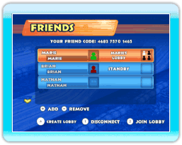
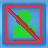
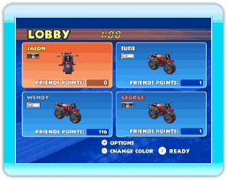
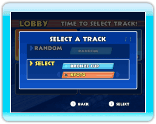

Note : Vous ne pouvez pas courir contre un ami sans d’abord l’avoir ajouté à votre liste d’amis. Cet ami doit également vous ajouter à la sienne. Pour ajouter un ami, vous pouvez accéder à la liste des amis (FRIEND ROSTER) en appuyant sur dans le menu NINTENDO WFC (CWF Nintendo). Appuyez sur lorsque la liste est affichée pour pouvoir entrer le code de votre ami (FRIEND CODE). Votre ami devra suivre la même procédure sur sa console Wii pour que vous puissiez jouer l’un contre l’autre.
Vous pouvez également ajouter un ami après avoir sélectionné RACE FRIENDS (course contre un ami) à l’écran de connexion Wi-Fi Nintendo. Vous accèderez alors à l’écran des amis (FRIENDS). Appuyez sur pour pouvoir entrer le code de votre ami (FRIEND CODE). Vous pouvez inscrire jusqu’à 64 amis.

Sur l’écran des amis (FRIENDS), vous pouvez vérifier le statut de vos amis. S’il n’y a pas de silhouette à côté du nom de votre ami, votre ami n’est pas connecté. Si une silhouette rouge apparaît à côté du nom de votre ami, votre ami est connecté mais n’a pas ouvert d’accueil. Si la silhouette est de couleur verte, votre ami est connecté et a ouvert un accueil (LOBBY).
N’est pas connecté à la connexion Wi-Fi Nintendo ou ne joue pas en « Race Friends Mode » [mode course contre un ami].
Connecté à la connexion Wi-Fi Nintendo et patiente à l’écran « Friends Screen » [écran des amis] dans le « Race Friends Mode » [mode course contre un ami].
Se trouve dans une salle d’attente ou participe à une course. Vous pouvez entrer dans la salle d’attente à moins qu’elle ne soit déjà pleine. Un maximum de quatre joueurs peut être dans une salle d’attente en même temps. Une fois à l’intérieur, vous pouvez voir les détails de la course.

Se trouve dans une salle d’attente ou participe à une course créée par un autre joueur qui ne figure pas sur votre liste d’amis. Vous ne pouvez pas entrer dans cette salle d’attente.
Pour joindre un accueil existant, choisissez un ami avec un accueil ouvert et appuyez sur . Pour créer votre propre accueil, appuyez sur , puis attendez que vos amis le joignent.

Une fois à l’accueil (LOBBY), vous pouvez changer la couleur de votre moto en appuyant sur . Appuyez sur pour confirmer. Si vous voulez revenir à l’écran de sélection du mode de la connexion Wi-Fi Nintendo, appuyez sur et sélectionnez LEAVE LOBBY (quitter l’accueil).
Note : La couleur du nom des joueurs indique dans quelle région ils habitent. Un nom en blanc indique que le joueur habite en Amérique, un nom en bleu, en Europe/Australie, et un nom en rouge, au Japon. Votre nom apparaîtra toujours en jaune.

Sélectionnez un parcours déverrouillé ou un parcours que vous avez créé. Après que tous les joueurs aient sélectionné un parcours, un de ces parcours est alors choisi au hasard.
Note : Les parcours que vous avez créés ne seront pas sélectionnés si vous choisissez RANDOM (choix aléatoire) lors de la sélection du parcours.
Une fois que le joueur en première position termine la course, le compte à rebours s’enclenche et les autres joueurs doivent atteindre la ligne d’arrivée en moins de 30 secondes ou ils sont automatiquement disqualifiés.
Lorsque la course se termine, vous gagnez des FRIENDS POINTS (points amis). Plus votre course est réussie, plus vous gagnez de points. Les FRIENDS POINTS sont utilisés pour déverrouiller des parcours spéciaux.
Note : Si vous voyez des joueurs transparents, cela signifie qu’ils ont des problèmes de connexion. Ils resteront transparents jusqu’à ce que leur connexion à Internet s’améliore.
Attention!
Chaque profil reçoit un code ami comportant 12 chiffres la première fois que vous utilisez la connexion Wi-Fi Nintendo. Les codes amis ne peuvent pas être obtenus si vous n’êtes pas connecté à la connexion Wi-Fi Nintendo. Si votre code ami ne s’affiche pas, essayez de vous connecter à la connexion Wi-Fi Nintendo pour corriger ce problème.

 dans le menu NINTENDO WFC (CWF Nintendo). Appuyez sur
dans le menu NINTENDO WFC (CWF Nintendo). Appuyez sur  lorsque la liste est affichée pour pouvoir entrer le code de votre ami (FRIEND CODE). Votre ami devra suivre la même procédure sur sa console Wii pour que vous puissiez jouer l’un contre l’autre.
lorsque la liste est affichée pour pouvoir entrer le code de votre ami (FRIEND CODE). Votre ami devra suivre la même procédure sur sa console Wii pour que vous puissiez jouer l’un contre l’autre. 
 . Appuyez sur
. Appuyez sur